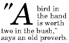
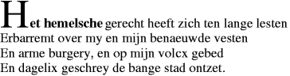
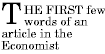

Selectors are patterns that match against elements in a tree, and as such form one of several technologies that can be used to select nodes in an XML document. Selectors have been optimized for use with HTML and XML, and are designed to be usable in performance-critical code.
CSS (Cascading Style Sheets) is a language for describing the rendering of HTML and XML documents on screen, on paper, in speech, etc. CSS uses Selectors for binding style properties to elements in the document.
This document describes the selectors that already exist in CSS1 [[CSS1]] and CSS2 [[!CSS21]], and further introduces new selectors for CSS3 and other languages that may need them.
Selectors define the following function:
expression ∗ element → boolean
That is, given an element and a selector, this specification defines whether that element matches the selector.
These expressions can also be used, for instance, to select a set of elements, or a single element from a set of elements, by evaluating the expression across all the elements in a subtree. STTS (Simple Tree Transformation Sheets), a language for transforming XML trees, uses this mechanism. [[STTS3]]
This Candidate Recommendation is identical to the 29 September 2011 W3C Recommendation except that the errata have been incorporated, as noted in the changes section. One of these is a technical change; a test is available for that change, and is passed by two or more implementations.
A separate test suite and implementation report is available.
Selectors Level 1 and Selectors Level 2 are defined as the subsets of selector functionality defined in the CSS1 and CSS2.1 specifications, respectively.
Some features of this specification are specific to CSS, or have particular limitations or rules specific to CSS. In this specification, these have been described in terms of CSS2.1. [[!CSS21]]
All of the text of this specification is normative except examples, notes, and sections explicitly marked as non-normative.
Additional terminology is defined in the Definitions section of [[!CSS21]]. Examples of document source code and fragments are given in XML [[XML10]] or HTML [[HTML401]][[HTML5]] syntax.
This section is non-normative.
The main differences between the selectors in CSS2 and those in Selectors are:
This section is non-normative, as it merely summarizes the following sections.
A Selector represents a structure. This structure can be used as a condition (e.g. in a CSS rule) that determines which elements a selector matches in the document tree, or as a flat description of the HTML or XML fragment corresponding to that structure.
Selectors may range from simple element names to rich contextual representations.
The following table summarizes the Selector syntax:
| Pattern | Represents | Description | Level |
|---|---|---|---|
| * | any element | Universal selector | 2 |
| E | an element of type E | Type selector | 1 |
| E[foo] | an E element with a "foo" attribute | Attribute selectors | 2 |
| E[foo="bar"] | an E element whose "foo" attribute value is exactly equal to "bar" | Attribute selectors | 2 |
| E[foo~="bar"] | an E element whose "foo" attribute value is a list of whitespace-separated values, one of which is exactly equal to "bar" | Attribute selectors | 2 |
| E[foo^="bar"] | an E element whose "foo" attribute value begins exactly with the string "bar" | Attribute selectors | 3 |
| E[foo$="bar"] | an E element whose "foo" attribute value ends exactly with the string "bar" | Attribute selectors | 3 |
| E[foo*="bar"] | an E element whose "foo" attribute value contains the substring "bar" | Attribute selectors | 3 |
| E[foo|="en"] | an E element whose "foo" attribute has a hyphen-separated list of values beginning (from the left) with "en" | Attribute selectors | 2 |
| E:root | an E element, root of the document | Structural pseudo-classes | 3 |
| E:nth-child(n) | an E element, the n-th child of its parent | Structural pseudo-classes | 3 |
| E:nth-last-child(n) | an E element, the n-th child of its parent, counting from the last one | Structural pseudo-classes | 3 |
| E:nth-of-type(n) | an E element, the n-th sibling of its type | Structural pseudo-classes | 3 |
| E:nth-last-of-type(n) | an E element, the n-th sibling of its type, counting from the last one | Structural pseudo-classes | 3 |
| E:first-child | an E element, first child of its parent | Structural pseudo-classes | 2 |
| E:last-child | an E element, last child of its parent | Structural pseudo-classes | 3 |
| E:first-of-type | an E element, first sibling of its type | Structural pseudo-classes | 3 |
| E:last-of-type | an E element, last sibling of its type | Structural pseudo-classes | 3 |
| E:only-child | an E element, only child of its parent | Structural pseudo-classes | 3 |
| E:only-of-type | an E element, only sibling of its type | Structural pseudo-classes | 3 |
| E:empty | an E element that has no children (including text nodes) | Structural pseudo-classes | 3 |
| E:link E:visited |
an E element being the source anchor of a hyperlink of which the target is not yet visited (:link) or already visited (:visited) | The link pseudo-classes | 1 |
| E:active E:hover E:focus |
an E element during certain user actions | The user action pseudo-classes | 1 and 2 |
| E:target | an E element being the target of the referring URI | The target pseudo-class | 3 |
| E:lang(fr) | an element of type E in language "fr" (the document language specifies how language is determined) | The :lang() pseudo-class | 2 |
| E:enabled E:disabled |
a user interface element E which is enabled or disabled | The UI element states pseudo-classes | 3 |
| E:checked | a user interface element E which is checked (for instance a radio-button or checkbox) | The UI element states pseudo-classes | 3 |
| E::first-line | the first formatted line of an E element | The ::first-line pseudo-element | 1 |
| E::first-letter | the first formatted letter of an E element | The ::first-letter pseudo-element | 1 |
| E::before | generated content before an E element | The ::before pseudo-element | 2 |
| E::after | generated content after an E element | The ::after pseudo-element | 2 |
| E.warning | an E element whose class is "warning" (the document language specifies how class is determined). | Class selectors | 1 |
| E#myid | an E element with ID equal to "myid". | ID selectors | 1 |
| E:not(s) | an E element that does not match simple selector s | Negation pseudo-class | 3 |
| E F | an F element descendant of an E element | Descendant combinator | 1 |
| E > F | an F element child of an E element | Child combinator | 2 |
| E + F | an F element immediately preceded by an E element | Next-sibling combinator | 2 |
| E ~ F | an F element preceded by an E element | Subsequent-sibling combinator | 3 |
All Selectors syntax is case-insensitive within the ASCII range (i.e. [a-z] and [A-Z] are equivalent), except for parts that are not under the control of Selectors. The case sensitivity of document language element names, attribute names, and attribute values in selectors depends on the document language. For example, in HTML, element names are case-insensitive, but in XML, they are case-sensitive. Case sensitivity of namespace prefixes is defined in [[!CSS3NAMESPACE]].
A selector is a chain of one or more sequences of simple selectors separated by combinators. One pseudo-element may be appended to the last sequence of simple selectors in a selector.
A sequence of simple selectors is a chain of simple selectors that are not separated by a combinator. It always begins with a type selector or a universal selector. No other type selector or universal selector is allowed in the sequence.
A simple selector is either a type selector, universal selector, attribute selector, class selector, ID selector, or pseudo-class.
Combinators are: whitespace, "greater-than
sign" (U+003E, >), "plus sign" (U+002B,
+) and "tilde" (U+007E, ~). White
space may appear between a combinator and the simple selectors around
it. Only the characters "space" (U+0020), "tab"
(U+0009), "line feed" (U+000A), "carriage return" (U+000D), and "form
feed" (U+000C) can occur in whitespace. Other space-like characters,
such as "em-space" (U+2003) and "ideographic space" (U+3000), are
never part of whitespace.
The elements of a document tree that are represented by a selector are the subjects of the selector. A selector consisting of a single sequence of simple selectors represents any element satisfying its requirements. Prepending another sequence of simple selectors and a combinator to a sequence imposes additional matching constraints, so the subjects of a selector are always a subset of the elements represented by the last sequence of simple selectors.
An empty selector, containing no sequence of simple selectors and no pseudo-element, is an invalid selector.
Characters in Selectors can be escaped with a backslash according to the same escaping rules as CSS. [[!CSS21]].
Certain selectors support namespace prefixes. The
mechanism by which namespace prefixes are declared should
be specified by the language that uses Selectors. If the language does
not specify a namespace prefix declaration mechanism, then no prefixes
are declared. In CSS, namespace prefixes are declared with the
@namespace
rule. [[!CSS3NAMESPACE]]
A comma-separated list of selectors represents the union of all elements selected by each of the individual selectors in the list. (A comma is U+002C.) For example, in CSS when several selectors share the same declarations, they may be grouped into a comma-separated list. White space may appear before and/or after the comma.
CSS example:
In this example, we condense three rules with identical declarations into one. Thus,
h1 { font-family: sans-serif }
h2 { font-family: sans-serif }
h3 { font-family: sans-serif }
is equivalent to:
h1, h2, h3 { font-family: sans-serif }
Warning: the equivalence is true in this example because all the selectors are valid selectors. If just one of these selectors were invalid, the entire group of selectors would be invalid. This would invalidate the rule for all three heading elements, whereas in the former case only one of the three individual heading rules would be invalidated.
Invalid CSS example:
h1 { font-family: sans-serif }
h2..foo { font-family: sans-serif }
h3 { font-family: sans-serif }
is not equivalent to:
h1, h2..foo, h3 { font-family: sans-serif }
because the above selector (h1, h2..foo, h3)
is entirely invalid and the entire style rule is dropped. (When
the selectors are not grouped, only the rule for h2..foo
is dropped.)
A type selector is the name of a document language element type written using the syntax of CSS qualified names [[!CSS3NAMESPACE]]. A type selector represents an instance of the element type in the document tree.
Example:
The following selector represents an h1 element in the document tree:
h1
Type selectors allow an optional namespace component: a namespace
prefix that has been previously declared may be
prepended to the element name separated by the namespace separator
"vertical bar" (U+007C, |). (See, e.g., [[XML-NAMES]] for the use of namespaces in
XML.)
The namespace component may be left empty (no prefix before the namespace separator) to indicate that the selector is only to represent elements with no namespace.
An asterisk may be used for the namespace prefix, indicating that the selector represents elements in any namespace (including elements with no namespace).
Element type selectors that have no namespace component (no
namespace separator) represent elements without regard to the
element's namespace (equivalent to "*|") unless a default
namespace has been declared for namespaced selectors (e.g. in CSS, in
the style sheet). If a default namespace has been declared, such
selectors will represent only elements in the default namespace.
A type selector containing a namespace prefix that has not been previously declared for namespaced selectors is an invalid selector.
In a namespace-aware client, the name part of element type selectors (the part after the namespace separator, if it is present) will only match against the local part of the element's qualified name.
In summary:
ns|E*|E|EECSS examples:
@namespace foo url(http://www.example.com);
foo|h1 { color: blue } /* first rule */
foo|* { color: yellow } /* second rule */
|h1 { color: red } /* ...*/
*|h1 { color: green }
h1 { color: green }
The first rule (not counting the @namespace at-rule)
will match only h1 elements in the
"http://www.example.com" namespace.
The second rule will match all elements in the "http://www.example.com" namespace.
The third rule will match only h1 elements with
no namespace.
The fourth rule will match h1 elements in any
namespace (including those without any namespace).
The last rule is equivalent to the fourth rule because no default namespace has been defined.
The universal selector, written as a CSS qualified name [[!CSS3NAMESPACE]] with an asterisk (* U+002A) as the local name, represents the qualified name of any element type. It represents any single element in the document tree in any namespace (including those without a namespace) if no default namespace has been specified for selectors. If a default namespace has been specified, see Universal selector and Namespaces below.
If a universal selector represented by * (i.e. without a
namespace prefix) is not the only component of a sequence
of simple selectors selectors or is immediately followed by a
pseudo-element, then the * may
be omitted and the universal selector's presence implied.
Examples:
*[hreflang|=en] and [hreflang|=en] are equivalent,*.warning and .warning are equivalent,*#myid and #myid are equivalent.Note: it is recommended that the
* not be omitted, because it decreases the potential
confusion between, for example,
div :first-child
and div:first-child.
Here, div *:first-child
is more readable.
The universal selector allows an optional namespace component. It is used as follows:
ns|**|*|**A universal selector containing a namespace prefix that has not been previously declared is an invalid selector.
Selectors allow the representation of an element’s attributes. When a selector is used as an expression to match against an element, attribute selectors must be considered to match an element if that element has an attribute that matches the attribute represented by the attribute selector.
CSS2 introduced four attribute selectors:
[att]
att attribute, whatever the value of
the attribute.[att=val]att attribute whose value is exactly
"val".[att~=val]att attribute whose value is a whitespace-separated list of words, one of
which is exactly "val". If "val" contains whitespace, it will never
represent anything (since the words are separated by
spaces). Also if "val" is the empty string, it will never represent
anything.[att|=val]
att attribute, its
value either being exactly "val" or beginning with "val" immediately
followed by "-" (U+002D). This is primarily intended to allow
language subcode matches (e.g., the hreflang attribute
on the a element in HTML) as described in BCP 47 ([[BCP47]]) or its successor. For
lang (or xml:lang) language subcode
matching, please see the :lang
pseudo-class.Attribute values must be CSS identifiers or strings. [[!CSS21]] The case-sensitivity of attribute names and values in selectors depends on the document language.
Examples:
The following attribute selector represents an h1
element that carries the title attribute, whatever its
value:
h1[title]
In the following example, the selector represents a
span element whose class attribute has
exactly the value "example":
span[class="example"]
Multiple attribute selectors can be used to represent several
attributes of an element, or several conditions on the same
attribute. Here, the selector represents a span element
whose hello attribute has exactly the value "Cleveland"
and whose goodbye attribute has exactly the value
"Columbus":
span[hello="Cleveland"][goodbye="Columbus"]
The following CSS rules illustrate the differences between
"=" and "~=". The first selector would match, for example, an
a element with the value "copyright copyleft
copyeditor" on a rel attribute. The second selector
would only match an a element with an href
attribute having the exact value "http://www.w3.org/".
a[rel~="copyright"] { ... }
a[href="http://www.w3.org/"] { ... }
The following selector represents an a element
whose hreflang attribute is exactly "fr".
a[hreflang=fr]
The following selector represents an a element for
which the value of the hreflang attribute begins with
"en", including "en", "en-US", and "en-scouse":
a[hreflang|="en"]
The following selectors represent a DIALOGUE element
whenever it has one of two different values for an attribute
character:
DIALOGUE[character=romeo] DIALOGUE[character=juliet]
Three additional attribute selectors are provided for matching substrings in the value of an attribute:
[att^=val]att attribute whose value begins
with the prefix "val". If "val" is the empty string then the selector does not
represent anything.[att$=val]
att attribute whose value ends with
the suffix "val". If "val" is the empty string then the selector does not represent
anything.[att*=val]
att attribute whose value contains
at least one instance of the substring "val". If "val" is the empty string then
the selector does not represent anything.Attribute values must be CSS identifiers or strings. [[!CSS21]] The case-sensitivity of attribute names in selectors depends on the document language.
Examples:
The following selector represents an HTML object, referencing an
image:
object[type^="image/"]
The following selector represents an HTML anchor a with an
href attribute whose value ends with ".html".
a[href$=".html"]
The following selector represents an HTML paragraph with a title
attribute whose value contains the substring "hello"
p[title*="hello"]
The attribute name in an attribute selector is given as a
CSS qualified
name: a namespace prefix that has been previously declared
may be prepended to the attribute name separated by the namespace
separator "vertical bar" (|). In keeping with
the Namespaces in the XML recommendation, default namespaces do not
apply to attributes, therefore attribute selectors without a namespace
component apply only to attributes that have no namespace (equivalent
to "|attr"). An asterisk may be used for
the namespace prefix indicating that the selector is to match all
attribute names without regard to the attribute's namespace.
An attribute selector with an attribute name containing a namespace prefix that has not been previously declared is an invalid selector.
CSS examples:
@namespace foo "http://www.example.com";
[foo|att=val] { color: blue }
[*|att] { color: yellow }
[|att] { color: green }
[att] { color: green }
The first rule will match only elements with the attribute
att in the "http://www.example.com" namespace with the
value "val".
The second rule will match only elements with the attribute
att regardless of the namespace of the attribute
(including no namespace).
The last two rules are equivalent and will match only elements
with the attribute att where the attribute is not
in a namespace.
Attribute selectors represent attribute values in the document tree. How that document tree is constructed is outside the scope of Selectors. In some document formats default attribute values can be defined in a DTD or elsewhere, but these can only be selected by attribute selectors if they appear in the document tree. Selectors should be designed so that they work whether or not the default values are included in the document tree.
For example, a XML UA may, but is not required to read an "external subset" of the DTD but is required to look for default attribute values in the document's "internal subset." (See, e.g., [[XML10]] for definitions of these subsets.) Depending on the UA, a default attribute value defined in the external subset of the DTD might or might not appear in the document tree.
A UA that recognizes an XML namespace may, but is not required to use its knowledge of that namespace to treat default attribute values as if they were present in the document. (For example, an XHTML UA is not required to use its built-in knowledge of the XHTML DTD. See, e.g., [[XML-NAMES]] for details on namespaces in XML 1.0.)
Note: Typically, implementations choose to ignore external subsets. This corresponds to the behavior of non-validating processors as defined by the XML specification.
Example:
Consider an element EXAMPLE with an attribute radix
that has a default value of "decimal". The DTD fragment might be
<!ATTLIST EXAMPLE radix (decimal,octal) "decimal">
If the style sheet contains the rules
EXAMPLE[radix=decimal] { /*... default property settings ...*/ }
EXAMPLE[radix=octal] { /*... other settings...*/ }
the first rule might not match elements whose radix attribute is
set by default, i.e. not set explicitly. To catch all cases, the
attribute selector for the default value must be dropped:
EXAMPLE { /*... default property settings ...*/ }
EXAMPLE[radix=octal] { /*... other settings...*/ }
Here, because the selector EXAMPLE[radix=octal] is
more specific than the type selector alone, the style declarations in
the second rule will override those in the first for elements that
have a radix attribute value of "octal". Care has to be taken that
all property declarations that are to apply only to the default case
are overridden in the non-default cases' style rules.
Working with HTML, authors may use the "period" notation (also
known as "full stop", U+002E, .) as an alternative to the
~= notation when representing the class
attribute. Thus, for HTML, div.value and
div[class~=value] have the same meaning. The attribute
value must immediately follow the full stop
(.).
UAs may apply selectors using the period (.) notation in XML
documents if the UA has namespace-specific knowledge that allows it to
determine which attribute is the "class" attribute for the
respective namespace. One such example of namespace-specific knowledge
is the prose in the specification for a particular namespace (e.g. SVG
1.1 [[SVG11]] describes the SVG
class attribute and how a UA should interpret it, and
similarly MathML [[MATHML3]] describes the MathML
class attribute.)
CSS examples:
We can assign style information to all elements with
class~="pastoral" as follows:
*.pastoral { color: green } /* all elements with class~=pastoral */
or just
.pastoral { color: green } /* all elements with class~=pastoral */
The following assigns style only to H1 elements with
class~="pastoral":
H1.pastoral { color: green } /* H1 elements with class~=pastoral */
Given these rules, the first H1 instance below would not have
green text, while the second would:
<H1>Not green</H1> <H1 class="pastoral">Very green</H1>
The following rule matches any P element whose class
attribute has been assigned a list of whitespace-separated values that includes both
pastoral and marine:
p.pastoral.marine { color: green }
This rule matches when class="pastoral blue aqua
marine" but does not match for class="pastoral
blue".
Note: Because CSS gives considerable
power to the "class" attribute, authors could conceivably design their
own "document language" based on elements with almost no associated
presentation (such as DIV and SPAN in HTML)
and assigning style
information through the "class" attribute. Authors should avoid this
practice since the structural elements of a document language often
have recognized and accepted meanings and author-defined classes may
not.
Note: If an element has multiple class attributes, their values must be concatenated with spaces between the values before searching for the class. As of this time the working group is not aware of any manner in which this situation can be reached, however, so this behavior is explicitly non-normative in this specification.
Document languages may contain attributes that are declared to be of type ID. What makes attributes of type ID special is that no two such attributes can have the same value in a conformant document, regardless of the type of the elements that carry them; whatever the document language, an ID typed attribute can be used to uniquely identify its element. In HTML all ID attributes are named "id"; XML applications may name ID attributes differently, but the same restriction applies.
An ID-typed attribute of a document language allows authors to
assign an identifier to one element instance in the document tree. An
ID selector contains a "number sign" (U+0023,
#) immediately followed by the ID value, which must be an
CSS identifiers.
An ID selector represents an element instance that has an
identifier that matches the identifier in the ID selector.
Selectors does not specify how a UA knows the ID-typed attribute of an element. The UA may, e.g., read a document's DTD, have the information hard-coded or ask the user.
Examples:
The following ID selector represents an h1 element
whose ID-typed attribute has the value "chapter1":
h1#chapter1
The following ID selector represents any element whose ID-typed attribute has the value "chapter1":
#chapter1
The following selector represents any element whose ID-typed attribute has the value "z98y".
*#z98y
Note: In XML 1.0 [[XML10]], the information about which attribute
contains an element's IDs is contained in a DTD or a schema. When
parsing XML, UAs do not always read the DTD, and thus may not know
what the ID of an element is (though a UA may have namespace-specific
knowledge that allows it to determine which attribute is the ID
attribute for that namespace). If a style sheet author knows or
suspects that a UA may not know what the ID of an element is, he
should use normal attribute selectors instead:
[name=p371] instead of #p371.
If an element has multiple ID attributes, all of them must be treated as IDs for that element for the purposes of the ID selector. Such a situation could be reached using mixtures of xml:id, DOM, XML DTDs, and namespace-specific knowledge.
The pseudo-class concept is introduced to permit selection based on information that lies outside of the document tree or that cannot be expressed using the other simple selectors.
A pseudo-class always consists of a "colon"
(:) followed by the name of the pseudo-class and
optionally by a value between parentheses.
Pseudo-classes are allowed in all sequences of simple selectors contained in a selector. Pseudo-classes are allowed anywhere in sequences of simple selectors, after the leading type selector or universal selector (possibly omitted). Pseudo-class names are case-insensitive. Some pseudo-classes are mutually exclusive, while others can be applied simultaneously to the same element. Pseudo-classes may be dynamic, in the sense that an element may acquire or lose a pseudo-class while a user interacts with the document.
Dynamic pseudo-classes classify elements on characteristics other than their name, attributes, or content, in principle characteristics that cannot be deduced from the document tree.
Dynamic pseudo-classes do not appear in the document source or document tree.
User agents commonly display unvisited links differently from previously visited ones. Selectors provides the pseudo-classes :link and :visited to distinguish them:
:link pseudo-class applies to links that have
not yet been visited.:visited pseudo-class applies once the link has
been visited by the user. After some amount of time, user agents may choose to return a visited link to the (unvisited) ':link' state.
The two states are mutually exclusive.
Example:
The following selector represents links carrying class
external and already visited:
a.external:visited
Note: It is possible for style sheet authors to abuse the :link and :visited pseudo-classes to determine which sites a user has visited without the user's consent.
UAs may therefore treat all links as unvisited links, or implement other measures to preserve the user's privacy while rendering visited and unvisited links differently.
Interactive user agents sometimes change the rendering in response to user actions. Selectors provides three pseudo-classes for the selection of an element the user is acting on.
:active applies only to the
primary or primary activation button (typically the "left" mouse
button), and any aliases thereof.There may be document language or implementation specific limits on
which elements can become :active or acquire
:focus.
These pseudo-classes are not mutually exclusive. An element may match several pseudo-classes at the same time.
Selectors doesn't define if the parent of an element that is ':active' or ':hover' is also in that state.
Note: If the ':hover' state applies to an element because its child is designated by a pointing device, then it's possible for ':hover' to apply to an element that is not underneath the pointing device.
Examples:
a:link /* unvisited links */ a:visited /* visited links */ a:hover /* user hovers */ a:active /* active links */
An example of combining dynamic pseudo-classes:
a:focus a:focus:hover
The last selector matches a elements that are in
the pseudo-class :focus and in the pseudo-class :hover.
Note: An element can be both ':visited' and ':active' (or ':link' and ':active').
Some URIs refer to a location within a resource. This kind of URI ends with a "number sign" (#) followed by an anchor identifier (called the fragment identifier).
URIs with fragment identifiers link to a certain element within the
document, known as the target element. For instance, here is a URI
pointing to an anchor named section_2 in an HTML
document:
http://example.com/html/top.html#section_2
A target element can be represented by the :target pseudo-class. If the document’s URI has no fragment identifier, then the document has no target element.
Example:
p.note:target
This selector represents a p element of class
note that is the target element of the referring
URI.
CSS example:
Here, the :target pseudo-class is used to make the
target element red and place an image before it, if there is one:
*:target { color : red }
*:target::before { content : url(target.png) }
If the document language specifies how the human language of an
element is determined, it is possible to write selectors that
represent an element based on its language. For example, in HTML [[HTML401]], the language is determined by a
combination of the lang attribute and possibly
information from the meta elements or the protocol (such
as HTTP headers). XML uses an attribute called xml:lang,
and there may be other document language-specific methods for
determining the language.
The pseudo-class :lang(C) represents an element that
is in language C. Whether an element is represented by a
:lang() selector is based solely on the element's
language value (normalized to BCP 47 syntax if necessary) being
equal to the identifier C, or beginning with the identifier C
immediately followed by "-" (U+002D). The matching of C against the
element's language value is performed case-insensitively within the ASCII range.
The identifier C does not have to be a valid language name.
C must be a valid CSS identifier [[!CSS21]] and must not be empty. (Otherwise, the selector is invalid.)
Note: It is recommended that documents and protocols indicate language using codes from BCP 47 [[BCP47]] or its successor, and by means of "xml:lang" attributes in the case of XML-based documents [[XML10]]. See "FAQ: Two-letter or three-letter language codes."
Examples:
The two following selectors represent an HTML document that is in
Belgian French or German. The two next selectors represent
q quotations in an arbitrary element in Belgian French
or German.
html:lang(fr-be) html:lang(de) :lang(fr-be) > q :lang(de) > q
The difference between :lang(C) and the '|=' operator
is that the '|=' operator only performs a comparison against a given
attribute on the element, while the :lang(C) pseudo-class
uses the UAs knowledge of the document's semantics to perform the
comparison.
In this HTML example, only the BODY matches
[lang|=fr] (because it has a LANG attribute) but both
the BODY and the P match :lang(fr) (because both are in
French). The P does not match the [lang|=fr] because it
does not have a LANG attribute.
<body lang=fr> <p>Je suis français.</p> </body>
The :enabled pseudo-class represents user interface elements that are in an enabled state; such elements have a corresponding disabled state.
Conversely, the :disabled pseudo-class represents user interface elements that are in a disabled state; such elements have a corresponding enabled state.
What constitutes an enabled state, a disabled state, and a user interface
element is language-dependent. In a typical document most elements will be
neither :enabled nor :disabled.
Note: CSS properties that might affect a user’s ability
to interact with a given user interface element do not affect whether it
matches :enabled or :disabled; e.g., the
display and visibility properties have no effect
on the enabled/disabled state of an element.
Radio and checkbox elements can be toggled by the user. Some menu
items are "checked" when the user selects them. When such elements are
toggled "on" the :checked pseudo-class applies. While the
:checked pseudo-class is dynamic in nature, and can altered
by user action, since it can also be based on the presence of semantic
attributes in the document, it applies to all media. For example, the
:checked pseudo-class initially applies to such elements
that have the HTML4 selected and checked
attributes as described in Section
17.2.1 of HTML4, but of course the user can toggle "off" such
elements in which case the :checked pseudo-class would no
longer apply.
Note: Radio and checkbox elements can be toggled by the user, but are sometimes in an indeterminate state, neither checked nor unchecked. This can be due to an element attribute, or DOM manipulation.
A future version of this specification may introduce an
:indeterminate pseudo-class that applies to such elements.
Selectors introduces the concept of structural pseudo-classes to permit selection based on extra information that lies in the document tree but cannot be represented by other simple selectors or combinators.
Standalone text and other non-element nodes are not counted when calculating the position of an element in its list of siblings; index numbering starts at 1.
The :root pseudo-class represents an element that is
the root of the document. In HTML 4, this is always the
HTML element.
The
:nth-child(an+b)
pseudo-class notation represents an element that has
an+b-1 siblings
before it in the document tree, for any positive
integer or zero value of n.
It is not required to have a parent.
For values of a and b greater than zero, this
effectively divides the element's children into groups of a
elements (the last group taking the remainder), and selecting the
bth element of each group.
For example, this allows the selectors to address every other
row in a table, and could be used to alternate the color of paragraph
text in a cycle of four. The a and b values must
be integers (positive, negative, or zero). The index of the first child
of an element is 1.
In addition to this, :nth-child() can take
'odd' and 'even' as arguments instead.
'odd' has the same signification as 2n+1,
and 'even' has the same signification as 2n.
The argument to :nth-child() must match the grammar
below, where INTEGER matches the token [0-9]+
and the rest of the tokenization is given by the
Lexical scanner in section 10.2:
nth
: S* [ ['-'|'+']? INTEGER? {N} [ S* ['-'|'+'] S* INTEGER ]? |
['-'|'+']? INTEGER | {O}{D}{D} | {E}{V}{E}{N} ] S*
;
Examples:
tr:nth-child(2n+1) /* represents every odd row of an HTML table */
tr:nth-child(odd) /* same */
tr:nth-child(2n+0) /* represents every even row of an HTML table */
tr:nth-child(even) /* same */
/* Alternate paragraph colours in CSS */
p:nth-child(4n+1) { color: navy; }
p:nth-child(4n+2) { color: green; }
p:nth-child(4n+3) { color: maroon; }
p:nth-child(4n+4) { color: purple; }
When the value b is preceded by a negative sign, the "+" character in the expression must be removed (it is effectively replaced by the "-" character indicating the negative value of b).
Examples:
:nth-child(10n-1) /* represents the 9th, 19th, 29th, etc, element */ :nth-child(10n+9) /* Same */ :nth-child(10n+-1) /* Syntactically invalid, and would be ignored */
When a=0, the an part need not be
included (unless the b part is already omitted). When
an is not included and b is non-negative,
the + sign before b (when allowed) may also be omitted.
In this case the syntax simplifies to :nth-child(b).
Examples:
foo:nth-child(0n+5) /* represents an element foo that is the 5th child
of its parent element */
foo:nth-child(5) /* same */
When a=1, or a=-1, the 1 may be
omitted from the rule.
Examples:
The following selectors are therefore equivalent:
bar:nth-child(1n+0) /* represents all bar elements, specificity (0,1,1) */ bar:nth-child(n+0) /* same */ bar:nth-child(n) /* same */ bar /* same but lower specificity (0,0,1) */
If b=0, then every ath element is picked. In such a case, the +b (or -b) part may be omitted unless the a part is already omitted.
Examples:
tr:nth-child(2n+0) /* represents every even row of an HTML table */ tr:nth-child(2n) /* same */
Whitespace is permitted after the "(", before the ")", and on either
side of the "+" or "-" that separates the an and
b parts when both are present.
Valid Examples with white space:
:nth-child( 3n + 1 ) :nth-child( +3n - 2 ) :nth-child( -n+ 6) :nth-child( +6 )
Invalid Examples with white space:
:nth-child(3 n) :nth-child(+ 2n) :nth-child(+ 2)
If both a and b are equal to zero, the pseudo-class represents no element in the document tree.
The value a can be negative, but only the positive
values of an+b, for
n≥0, may represent an element in the document
tree.
Example:
html|tr:nth-child(-n+6) /* represents the 6 first rows of XHTML tables */
The :nth-last-child(an+b)
pseudo-class notation represents an element that has
an+b-1 siblings
after it in the document tree, for any positive
integer or zero value of n.
It is not required to have a parent.
See :nth-child() pseudo-class for
the syntax of its argument.
It also accepts the 'even' and 'odd' values
as arguments.
Examples:
tr:nth-last-child(-n+2) /* represents the two last rows of an HTML table */
foo:nth-last-child(odd) /* represents all odd foo elements in their parent element,
counting from the last one */
The :nth-of-type(an+b)
pseudo-class notation represents an element that has
an+b-1 siblings with the same expanded
element name before it in the document tree, for any
zero or positive integer value of n.
It is not required to have a parent.
See :nth-child()
pseudo-class for the syntax of its argument. It also accepts the
'even' and 'odd' values.
CSS example:
This allows an author to alternate the position of floated images:
img:nth-of-type(2n+1) { float: right; }
img:nth-of-type(2n) { float: left; }
The :nth-last-of-type(an+b)
pseudo-class notation represents an element that has
an+b-1 siblings with the same expanded
element name after it in the document tree, for any
zero or positive integer value of n.
It is not required to have a parent.
See :nth-child()
pseudo-class for the syntax of its argument. It also accepts the
'even' and 'odd' values.
Example:
To represent all h2 children of an XHTML
body except the first and last, one could use the
following selector:
body > h2:nth-of-type(n+2):nth-last-of-type(n+2)
In this case, one could also use :not(), although the
selector ends up being just as long:
body > h2:not(:first-of-type):not(:last-of-type)
Same as :nth-child(1). The :first-child pseudo-class
represents an element that is first in a list of siblings.
Examples:
The following selector represents a p element that is
the first child of a div element:
div > p:first-child
This selector can represent the p inside the
div of the following fragment:
<p> The last P before the note.</p> <div class="note"> <p> The first P inside the note.</p> </div>but cannot represent the second
p in the following
fragment:
<p> The last P before the note.</p> <div class="note"> <h2> Note </h2> <p> The first P inside the note.</p> </div>
The following two selectors are usually equivalent:
* > a:first-child /* a is first child of any element */ a:first-child /* Same (assuming a is not the root element) */
Same as :nth-last-child(1). The :last-child pseudo-class
represents an element that is last in a list of siblings.
Example:
The following selector represents a list item li that
is the last child of an ordered list ol.
ol > li:last-child
Same as :nth-of-type(1). The :first-of-type pseudo-class
represents an element that is the first sibling of its type.
Example:
The following selector represents a definition title
dt inside a definition list dl, this
dt being the first of its type in the list of children of
its parent element.
dl dt:first-of-type
It is a valid description for the first two dt
elements in the following example but not for the third one:
<dl> <dt>gigogne</dt> <dd> <dl> <dt>fusée</dt> <dd>multistage rocket</dd> <dt>table</dt> <dd>nest of tables</dd> </dl> </dd> </dl>
Same as :nth-last-of-type(1). The
:last-of-type pseudo-class represents an element that is
the last sibling of its type.
Example:
The following selector represents the last data cell
td of a table row tr.
tr > td:last-of-type
The :only-child pseudo-class
represents an element that has no siblings. Same as
:first-child:last-child or
:nth-child(1):nth-last-child(1), but with a lower
specificity.
The :only-of-type pseudo-class
represents an element that has no siblings with the same expanded element
name. Same as :first-of-type:last-of-type or
:nth-of-type(1):nth-last-of-type(1), but with a lower
specificity.
The :empty pseudo-class represents an element that has no children at all. In terms of the document tree, only element nodes and content nodes (such as DOM [[DOM-LEVEL-3-CORE]] text nodes, CDATA nodes, and entity references) whose data has a non-zero length must be considered as affecting emptiness; comments, processing instructions, and other nodes must not affect whether an element is considered empty or not.
Examples:
p:empty is a valid representation of the following fragment:
<p></p>
foo:empty is not a valid representation for the
following fragments:
<foo>bar</foo>
<foo><bar>bla</bar></foo>
<foo>this is not <bar>:empty</bar></foo>
This section intentionally left blank. (This section previously
defined a :contains() pseudo-class.)
The negation pseudo-class, :not(X), is a functional notation taking a simple selector (excluding the negation pseudo-class itself) as an argument. It represents an element that is not represented by its argument.
Negations may not be nested; :not(:not(...)) is invalid.
Note also that since pseudo-elements are not simple selectors, they are
not a valid argument to :not().
Examples:
The following selector matches all button
elements in an HTML document that are not disabled.
button:not([DISABLED])
The following selector represents all but FOO
elements.
*:not(FOO)
The following group of selectors represents all HTML elements except links.
html|*:not(:link):not(:visited)
Default namespace declarations do not affect the argument of the negation pseudo-class unless the argument is a universal selector or a type selector.
Examples:
Assuming that the default namespace is bound to "http://example.com/", the following selector represents all elements that are not in that namespace:
*|*:not(*)
The following selector matches any element that is not being hovered, regardless of its namespace. In particular, it is not limited to only matching elements in the default namespace that are not being hovered, and elements not in the default namespace don't match the rule when they are being hovered.
*|*:not(:hover)
Note: the :not() pseudo allows
useless selectors to be written. For instance :not(*|*),
which represents no element at all, or foo:not(bar),
which is equivalent to foo but with a higher
specificity.
Pseudo-elements create abstractions about the document tree beyond
those specified by the document language. For instance, document
languages do not offer mechanisms to access the first letter or first
line of an element’s content. Pseudo-elements allow authors to refer
to this otherwise inaccessible information. Pseudo-elements may also
provide authors a way to refer to content that does not exist in the
source document (e.g., the ::before and
::after pseudo-elements give access to generated
content).
A pseudo-element is made of two colons (::) followed
by the name of the pseudo-element.
This :: notation is introduced by the current document
in order to establish a discrimination between pseudo-classes and
pseudo-elements. For compatibility with existing style sheets, user
agents must also accept the previous one-colon notation for
pseudo-elements introduced in CSS levels 1 and 2 (namely,
:first-line, :first-letter,
:before and :after). This compatibility is
not allowed for the new pseudo-elements introduced in this specification.
Only one pseudo-element may appear per selector, and if present it must appear after the sequence of simple selectors that represents the subjects of the selector. Note: A future version of this specification may allow multiple pseudo-elements per selector.
The ::first-line pseudo-element describes the contents of the first formatted line of an element.
CSS example:
p::first-line { text-transform: uppercase }
The above rule means "change the letters of the first line of every
p element to uppercase".
The selector p::first-line does not match any real
document element. It does match a pseudo-element that conforming user
agents will insert at the beginning of every p element.
Note that the length of the first line depends on a number of factors, including the width of the page, the font size, etc. Thus, an ordinary HTML paragraph such as:
<P>This is a somewhat long HTML paragraph that will be broken into several lines. The first line will be identified by a fictional tag sequence. The other lines will be treated as ordinary lines in the paragraph.</P>
the lines of which happen to be broken as follows:
THIS IS A SOMEWHAT LONG HTML PARAGRAPH THAT will be broken into several lines. The first line will be identified by a fictional tag sequence. The other lines will be treated as ordinary lines in the paragraph.
This paragraph might be "rewritten" by user agents to include the
fictional tag sequence for ::first-line. This
fictional tag sequence helps to show how properties are inherited.
<P><P::first-line> This is a somewhat long HTML paragraph that </P::first-line> will be broken into several lines. The first line will be identified by a fictional tag sequence. The other lines will be treated as ordinary lines in the paragraph.</P>
If a pseudo-element breaks up a real element, the desired effect
can often be described by a fictional tag sequence that closes and
then re-opens the element. Thus, if we mark up the previous paragraph
with a span element:
<P><SPAN class="test"> This is a somewhat long HTML paragraph that will be broken into several lines.</SPAN> The first line will be identified by a fictional tag sequence. The other lines will be treated as ordinary lines in the paragraph.</P>
the user agent could simulate start and end tags for
span when inserting the fictional tag sequence for
::first-line.
<P><P::first-line><SPAN class="test"> This is a somewhat long HTML paragraph that will </SPAN></P::first-line><SPAN class="test"> be broken into several lines.</SPAN> The first line will be identified by a fictional tag sequence. The other lines will be treated as ordinary lines in the paragraph.</P>
In CSS, the ::first-line pseudo-element can only
have an effect when attached to a block-like container such as a
block box, inline-block, table-caption, or table-cell.
In such a case, it refers to the first formatted line of that container.
The first formatted line of an element may occur inside a
block-level descendant in the same flow (i.e., a block-level
descendant that is not out-of-flow due to floating or positioning). For example,
the first line of the DIV in <DIV><P>This
line...</P></DIV> is the first line of the P (assuming
that both P and DIV are block-level).
The first line of a table-cell or inline-block cannot be the first
formatted line of an ancestor element. Thus, in <DIV><P
STYLE="display: inline-block">Hello<BR>Goodbye</P>
etcetera</DIV> the first formatted line of the
DIV is not the line "Hello".
Note: Note that the first line of the
p in this fragment: <p><br>First...
doesn't contain any letters (assuming the default style for br
in HTML 4). The word "First" is not on the first formatted line.
A UA should act as if the fictional start tags of the
::first-line pseudo-elements were nested just inside the
innermost enclosing block-level element. (Since CSS1 and CSS2 were
silent on this case, authors should not rely on this behavior.)
For example, the fictional tag sequence for
<DIV> <P>First paragraph</P> <P>Second paragraph</P> </DIV>
is
<DIV> <P><DIV::first-line><P::first-line>First paragraph</P::first-line></DIV::first-line></P> <P><P::first-line>Second paragraph</P::first-line></P> </DIV>
The ::first-line pseudo-element is similar to an
inline-level element, but with certain restrictions. The
following CSS properties apply to a ::first-line
pseudo-element: font properties, color property, background
properties, 'word-spacing', 'letter-spacing', 'text-decoration',
'text-transform', 'line-height'. UAs may apply other
properties as well.
During CSS inheritance, the portion of a child element that occurs
on the first line only inherits properties applicable to the
::first-line pseudo-element from the ::first-line
pseudo-element. For all other properties inheritance is from the
non-pseudo-element parent of the first line pseudo element. (The portion
of a child element that does not occur on the first line always inherits
from the parent of that child.)
The ::first-letter pseudo-element represents the first letter of an element, if it is not preceded by any other content (such as images or inline tables) on its line. The ::first-letter pseudo-element may be used for "initial caps" and "drop caps", which are common typographical effects.
Punctuation (i.e, characters defined in Unicode in the "open" (Ps), "close" (Pe), "initial" (Pi). "final" (Pf) and "other" (Po) punctuation classes), that precedes or follows the first letter should be included. [[!UNICODE]]

The ::first-letter also applies if the first letter is
in fact a digit, e.g., the "6" in "67 million dollars is a lot of
money."
Note:
In some cases the ::first-letter pseudo-element should include
more than just the first non-punctuation character on a line. For
example, combining characters must be kept with their base character.
Additionally, some languages may have specific rules about how to
treat certain letter combinations. The UA definition of
::first-letter should include at least the default grapheme
cluster as defined by UAX29 and may include more than that as appropriate.
In Dutch, for example, if the letter combination "ij" appears at the
beginning of an element, both letters should be considered within the
::first-letter pseudo-element. [[UAX29]]
If the letters that would form the ::first-letter are not in the
same element, such as "‘T" in <p>‘<em>T..., the UA
may create a ::first-letter pseudo-element from one of the elements,
both elements, or simply not create a pseudo-element.
Similarly, if the first letter(s) of the block are not at the start of the line (for example due to bidirectional reordering), then the UA need not create the pseudo-element(s).
Example:
The following CSS and HTML example illustrates how overlapping pseudo-elements may interact. The first letter of each P element will be green with a font size of '24pt'. The rest of the first formatted line will be 'blue' while the rest of the paragraph will be 'red'.
p { color: red; font-size: 12pt }
p::first-letter { color: green; font-size: 200% }
p::first-line { color: blue }
<P>Some text that ends up on two lines</P>
Assuming that a line break will occur before the word "ends", the fictional tag sequence for this fragment might be:
<P> <P::first-line> <P::first-letter> S </P::first-letter>ome text that </P::first-line> ends up on two lines </P>
Note that the ::first-letter element is inside the ::first-line
element. Properties set on ::first-line are inherited by
::first-letter, but are overridden if the same property is set on
::first-letter.
The first letter must occur on the first formatted line. For example, in
this HTML fragment: <p><br>First... the first line
doesn't contain any letters and ::first-letter doesn't
match anything (assuming the default style for br in HTML
4). In particular, it does not match the "F" of "First."
In CSS, the ::first-letter pseudo-element applies to
block-like containers such as block, list-item, table-cell, table-caption,
and inline-block elements.
Note: A future version
of this specification may allow this pseudo-element to apply to more
display types.
The ::first-letter pseudo-element can be used with all
such elements that contain text, or that have a descendant in the same
flow that contains text. A UA should act as if the fictional start tag
of the ::first-letter pseudo-element is just before the first text of
the element, even if that first text is in a descendant.
Example:
The fictional tag sequence for this HTML fragment:
<div> <p>The first text.
is:
<div> <p><div::first-letter><p::first-letter>T</...></...>he first text.
In CSS the first letter of a table-cell or inline-block cannot be the
first letter of an ancestor element. Thus, in <DIV><P
STYLE="display: inline-block">Hello<BR>Goodbye</P>
etcetera</DIV> the first letter of the DIV is not the
letter "H". In fact, the DIV doesn't have a first letter.
If an element is a list item ('display: list-item'), the
::first-letter applies to the first letter in the
principal box after the marker. UAs may ignore
::first-letter on list items with 'list-style-position:
inside'. If an element has ::before or
::after content, the ::first-letter applies
to the first letter of the element including that content.
Example:
After the rule p::before {content: "Note: "}, the selector
p::first-letter matches the "N" of "Note".
In CSS a ::first-line pseudo-element is similar to an inline-level element
if its 'float' property is 'none'; otherwise, it is similar to a floated element.
The following properties that apply to ::first-letter
pseudo-elements: font properties, 'text-decoration', 'text-transform',
'letter-spacing', 'word-spacing' (when appropriate), 'line-height',
'float', 'vertical-align' (only if 'float' is 'none'), margin
properties, padding properties, border properties, color property,
background properties. UAs may apply other properties as well. To
allow UAs to render a typographically correct drop cap or initial cap,
the UA may choose a line-height, width and height based on the shape
of the letter, unlike for normal elements.
Example:
This CSS and HTML example shows a possible rendering of an initial cap. Note
that the 'line-height' that is inherited by the ::first-letter
pseudo-element is 1.1, but the UA in this example has computed the
height of the first letter differently, so that it doesn't cause any
unnecessary space between the first two lines. Also note that the
fictional start tag of the first letter is inside the span, and thus
the font weight of the first letter is normal, not bold as the span:
p { line-height: 1.1 }
p::first-letter { font-size: 3em; font-weight: normal }
span { font-weight: bold }
...
<p><span>Het hemelsche</span> gerecht heeft zich ten lange lesten<br>
Erbarremt over my en mijn benaeuwde vesten<br>
En arme burgery, en op mijn volcx gebed<br>
En dagelix geschrey de bange stad ontzet.

The following CSS will make a drop cap initial letter span about two lines:
<!DOCTYPE HTML PUBLIC "-//W3C//DTD HTML 4.01//EN">
<HTML>
<HEAD>
<TITLE>Drop cap initial letter</TITLE>
<STYLE type="text/css">
P { font-size: 12pt; line-height: 1.2 }
P::first-letter { font-size: 200%; font-weight: bold; float: left }
SPAN { text-transform: uppercase }
</STYLE>
</HEAD>
<BODY>
<P><SPAN>The first</SPAN> few words of an article
in The Economist.</P>
</BODY>
</HTML>
This example might be formatted as follows:

The fictional tag sequence is:
<P> <SPAN> <P::first-letter> T </P::first-letter>he first </SPAN> few words of an article in the Economist. </P>
Note that the ::first-letter pseudo-element tags abut
the content (i.e., the initial character), while the ::first-line
pseudo-element start tag is inserted right after the start tag of the
block element.
In order to achieve traditional drop caps formatting, user agents may approximate font sizes, for example to align baselines. Also, the glyph outline may be taken into account when formatting.
This section intentionally left blank. (This section previously
defined a ::selection pseudo-element.)
The ::before and ::after pseudo-elements can be used to describe generated content before or after an element’s content. They are explained in CSS 2.1 [[!CSS21]].
When the ::first-letter and ::first-line
pseudo-elements are applied to an element having content generated
using ::before or ::after, they apply to the
first letter or line of the element including the generated content.
At times, authors may want selectors to describe an element that is
the descendant of another element in the document tree (e.g., "an
EM element that is contained within an H1
element"). Descendant combinators express such a relationship. A
descendant combinator is whitespace that
separates two sequences of simple selectors. A selector of the form
"A B" represents an element B that is an
arbitrary descendant of some ancestor element A.
Examples:
For example, consider the following selector:
h1 em
It represents an em element being the descendant of
an h1 element. It is a correct and valid, but partial,
description of the following fragment:
<h1>This <span class="myclass">headline is <em>very</em> important</span></h1>
The following selector:
div * p
represents a p element that is a grandchild or later
descendant of a div element. Note the whitespace on
either side of the "*" is not part of the universal selector; the
whitespace is a combinator indicating that the div must be the
ancestor of some element, and that that element must be an ancestor
of the p.
The following selector, which combines descendant combinators and
attribute selectors, represents an
element that (1) has the href attribute set and (2) is
inside a p that is itself inside a div:
div p *[href]
A child combinator describes a childhood relationship
between two elements. A child combinator is made of the
"greater-than sign" (U+003E, >) character and
separates two sequences of simple selectors.
Examples:
The following selector represents a p element that is
child of body:
body > p
The following example combines descendant combinators and child combinators.
div ol>li p
It represents a p element that is a descendant of an
li element; the li element must be the
child of an ol element; the ol element must
be a descendant of a div. Notice that the optional white
space around the ">" combinator has been left out.
For information on selecting the first child of an element, please
see the section on the :first-child pseudo-class
above.
There are two different sibling combinators: the next-sibling combinator and the subsequent-sibling combinator. In both cases, non-element nodes (e.g. text between elements) are ignored when considering adjacency of elements.
The next-sibling combinator is made of the "plus
sign" (U+002B, +) character that separates two
sequences of simple selectors. The elements represented by the two
sequences share the same parent in the document tree and the element
represented by the first sequence immediately precedes the element
represented by the second one.
Examples:
The following selector represents a p element
immediately following a math element:
math + p
The following selector is conceptually similar to the one in the
previous example, except that it adds an attribute selector — it
adds a constraint to the h1 element, that it must have
class="opener":
h1.opener + h2
The subsequent-sibling combinator is made of the "tilde"
(U+007E, ~) character that separates two sequences of
simple selectors. The elements represented by the two sequences share
the same parent in the document tree and the element represented by
the first sequence precedes (not necessarily immediately) the element
represented by the second one.
Example:
h1 ~ pre
represents a pre element following an h1. It
is a correct and valid, but partial, description of:
<h1>Definition of the function a</h1> <p>Function a(x) has to be applied to all figures in the table.</p> <pre>function a(x) = 12x/13.5</pre>
A selector's specificity is calculated as follows:
Selectors inside the negation pseudo-class are counted like any other, but the negation itself does not count as a pseudo-class.
Concatenating the three numbers a-b-c (in a number system with a large base) gives the specificity.
Examples:
* /* a=0 b=0 c=0 -> specificity = 0 */ LI /* a=0 b=0 c=1 -> specificity = 1 */ UL LI /* a=0 b=0 c=2 -> specificity = 2 */ UL OL+LI /* a=0 b=0 c=3 -> specificity = 3 */ H1 + *[REL=up] /* a=0 b=1 c=1 -> specificity = 11 */ UL OL LI.red /* a=0 b=1 c=3 -> specificity = 13 */ LI.red.level /* a=0 b=2 c=1 -> specificity = 21 */ #x34y /* a=1 b=0 c=0 -> specificity = 100 */ #s12:not(FOO) /* a=1 b=0 c=1 -> specificity = 101 */
Note: Repeated occurrences of the same simple selector are allowed and do increase specificity.
Note: the specificity of the styles
specified in an HTML style attribute is described in CSS
2.1. [[!CSS21]].
The grammar below defines the syntax of Selectors. It is globally LL(1) and can be locally LL(2) (but note that most UAs should not use it directly, since it doesn’t express the parsing conventions). The format of the productions is optimized for human consumption and some shorthand notations beyond Yacc (see [[!YACC]]) are used:
The productions are:
selectors_group
: selector [ COMMA S* selector ]*
;
selector
: simple_selector_sequence [ combinator simple_selector_sequence ]*
;
combinator
/* combinators can be surrounded by whitespace */
: PLUS S* | GREATER S* | TILDE S* | S+
;
simple_selector_sequence
: [ type_selector | universal ]
[ HASH | class | attrib | pseudo | negation ]*
| [ HASH | class | attrib | pseudo | negation ]+
;
type_selector
: [ namespace_prefix ]? element_name
;
namespace_prefix
: [ IDENT | '*' ]? '|'
;
element_name
: IDENT
;
universal
: [ namespace_prefix ]? '*'
;
class
: '.' IDENT
;
attrib
: '[' S* [ namespace_prefix ]? IDENT S*
[ [ PREFIXMATCH |
SUFFIXMATCH |
SUBSTRINGMATCH |
'=' |
INCLUDES |
DASHMATCH ] S* [ IDENT | STRING ] S*
]? ']'
;
pseudo
/* '::' starts a pseudo-element, ':' a pseudo-class */
/* Exceptions: :first-line, :first-letter, :before and :after. */
/* Note that pseudo-elements are restricted to one per selector and */
/* occur only in the last simple_selector_sequence. */
: ':' ':'? [ IDENT | functional_pseudo ]
;
functional_pseudo
: FUNCTION S* expression ')'
;
expression
/* In CSS3, the expressions are identifiers, strings, */
/* or of the form "an+b" */
: [ [ PLUS | '-' | DIMENSION | NUMBER | STRING | IDENT ] S* ]+
;
negation
: NOT S* negation_arg S* ')'
;
negation_arg
: type_selector | universal | HASH | class | attrib | pseudo
;
The following is the tokenizer, written in Flex (see [[!FLEX]]) notation. The tokenizer is case-insensitive.
The two occurrences of "\377" represent the highest character number that current versions of Flex can deal with (decimal 255). They should be read as "\4177777" (decimal 1114111), which is the highest possible code point in Unicode/ISO-10646. [[!UNICODE]]
%option case-insensitive
ident [-]?{nmstart}{nmchar}*
name {nmchar}+
nmstart [_a-z]|{nonascii}|{escape}
nonascii [^\0-\177]
unicode \\[0-9a-f]{1,6}(\r\n|[ \n\r\t\f])?
escape {unicode}|\\[^\n\r\f0-9a-f]
nmchar [_a-z0-9-]|{nonascii}|{escape}
num [0-9]+|[0-9]*\.[0-9]+
string {string1}|{string2}
string1 \"([^\n\r\f\\"]|\\{nl}|{nonascii}|{escape})*\"
string2 \'([^\n\r\f\\']|\\{nl}|{nonascii}|{escape})*\'
invalid {invalid1}|{invalid2}
invalid1 \"([^\n\r\f\\"]|\\{nl}|{nonascii}|{escape})*
invalid2 \'([^\n\r\f\\']|\\{nl}|{nonascii}|{escape})*
nl \n|\r\n|\r|\f
w [ \t\r\n\f]*
D d|\\0{0,4}(44|64)(\r\n|[ \t\r\n\f])?
E e|\\0{0,4}(45|65)(\r\n|[ \t\r\n\f])?
N n|\\0{0,4}(4e|6e)(\r\n|[ \t\r\n\f])?|\\n
O o|\\0{0,4}(4f|6f)(\r\n|[ \t\r\n\f])?|\\o
T t|\\0{0,4}(54|74)(\r\n|[ \t\r\n\f])?|\\t
V v|\\0{0,4}(58|78)(\r\n|[ \t\r\n\f])?|\\v
%%
[ \t\r\n\f]+ return S;
"~=" return INCLUDES;
"|=" return DASHMATCH;
"^=" return PREFIXMATCH;
"$=" return SUFFIXMATCH;
"*=" return SUBSTRINGMATCH;
{ident} return IDENT;
{string} return STRING;
{ident}"(" return FUNCTION;
{num} return NUMBER;
"#"{name} return HASH;
{w}"+" return PLUS;
{w}">" return GREATER;
{w}"," return COMMA;
{w}"~" return TILDE;
":"{N}{O}{T}"(" return NOT;
@{ident} return ATKEYWORD;
{invalid} return INVALID;
{num}% return PERCENTAGE;
{num}{ident} return DIMENSION;
"<!--" return CDO;
"-->" return CDC;
\/\*[^*]*\*+([^/*][^*]*\*+)*\/ /* ignore comments */
. return *yytext;
Each specification using Selectors must define the subset of Selectors it allows and excludes, and describe the local meaning of all the components of that subset.
Non normative examples:
| Selectors profile | |
|---|---|
| Specification | CSS level 1 |
| Accepts | type selectors class selectors ID selectors :link, :visited and :active pseudo-classes descendant combinator ::first-line and ::first-letter pseudo-elements |
| Excludes |
universal selector namespaces |
| Extra constraints | only one class selector allowed per sequence of simple selectors |
| Selectors profile | |
|---|---|
| Specification | CSS level 2 |
| Accepts | type selectors universal selector attribute presence and values selectors class selectors ID selectors :link, :visited, :active, :hover, :focus, :lang() and :first-child pseudo-classes descendant combinator child combinator next-sibling combinator ::first-line and ::first-letter pseudo-elements ::before and ::after pseudo-elements |
| Excludes |
substring matching attribute
selectors namespaces |
| Extra constraints | more than one class selector per sequence of simple selectors (CSS1 constraint) allowed |
In CSS, selectors express pattern matching rules that determine which style rules apply to elements in the document tree.
The following selector (CSS level 2) will match all anchors a
with attribute name set inside a section 1 header h1:
h1 a[name]
All CSS declarations attached to such a selector are applied to elements matching it.
| Selectors profile | |
|---|---|
| Specification | STTS 3 |
| Accepts |
type selectors namespaces |
| Excludes | non-accepted pseudo-classes pseudo-elements |
| Extra constraints | some selectors and combinators are not allowed in fragment descriptions on the right side of STTS declarations. |
Selectors can be used in STTS 3 in two different manners:
This section defines conformance with the present specification only.
The inability of a user agent to implement part of this specification due to the limitations of a particular device (e.g., non interactive user agents will probably not implement dynamic pseudo-classes because they make no sense without interactivity) does not imply non-conformance.
All specifications reusing Selectors must contain a Profile listing the subset of Selectors it accepts or excludes, and describing the constraints it adds to the current specification.
Invalidity is caused by a parsing error, e.g. an unrecognized token or a token which is not allowed at the current parsing point.
User agents must observe the rules for handling parsing errors:
Specifications reusing Selectors must define how to handle parsing errors. (In the case of CSS, the entire rule in which the selector is used is dropped.)
This specification has a test suite allowing user agents to verify their basic conformance to the specification. This test suite does not pretend to be exhaustive and does not cover all possible combined cases of Selectors.
The CSS working group would like to thank everyone who has sent comments on this specification over the years.
In particular, the working group would like to extend special thanks to Donna McManus, Justin Baker, Joel Sklar, and Molly Ives Brower who performed the final editorial review of the last call draft. The working group would also like to thank Adam Kuehn, Boris Zbarsky, David Perrell, Elliotte Harold, Matthew Raymond, Ruud Steltenpool, Patrick Garies, Anton Prowse, and the W3C Internationalization Working Group for their last call comments and kind words.
Substantive since the previous Recommendation are: